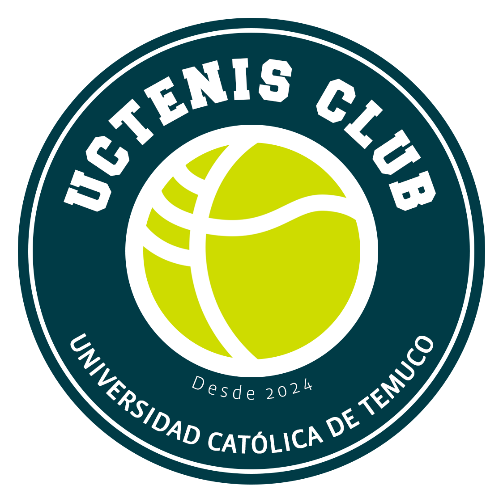

Canchas de Tenis UCT
Pincha en la cancha que deseas reservar.
Complejo CEC
Canchas de Arcilla
Complejo CJP
Canchas de Asfalto
Pronóstico del Tiempo en Temuco
Analizando el mejor momento para jugar...

Pincha en la cancha que deseas reservar.
Canchas de Arcilla
Canchas de Asfalto
Analizando el mejor momento para jugar...